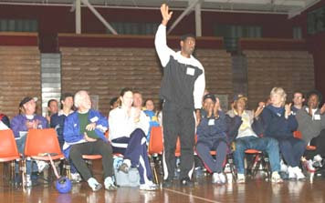

Reynaldo Brown-two time national and NCAA high jump champ. being introduced photo by E Miller
The Logan Olympian Track and Field clinic held every February at Logan High School in Union City lives up to it's billing, featuring many Olympians and world record holders in a learn-by-doing clinic for youth and high school age students.
|
click on corresponding link:
|